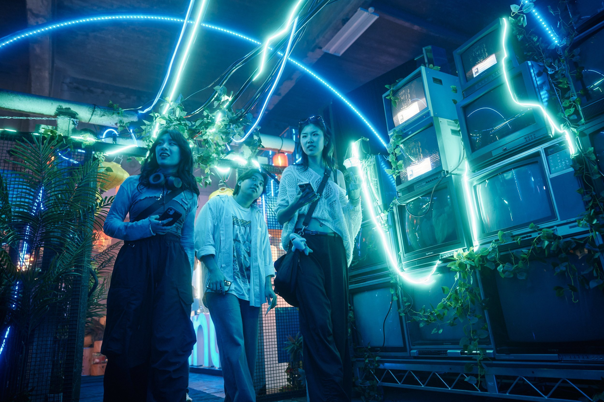
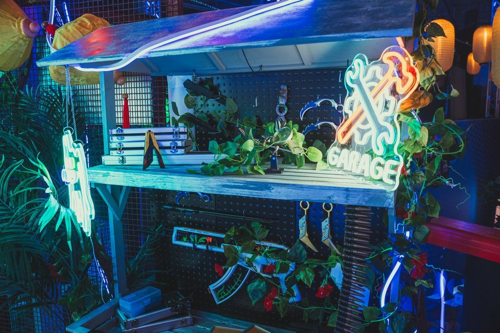
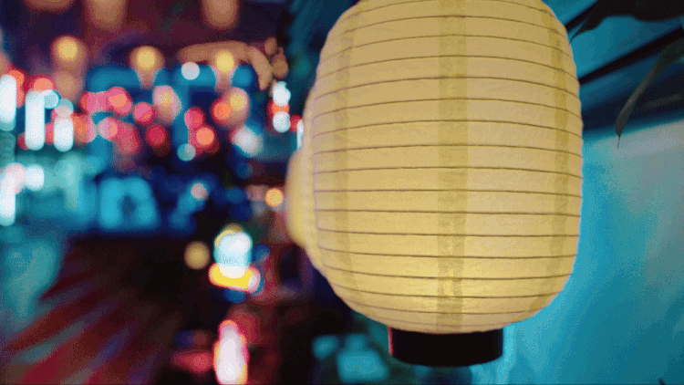
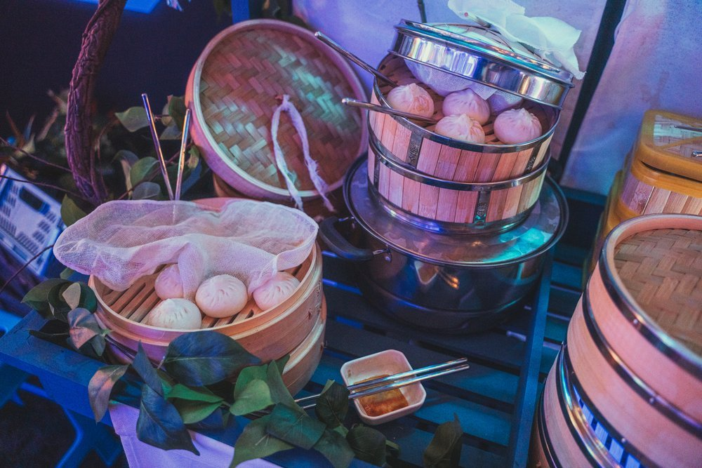
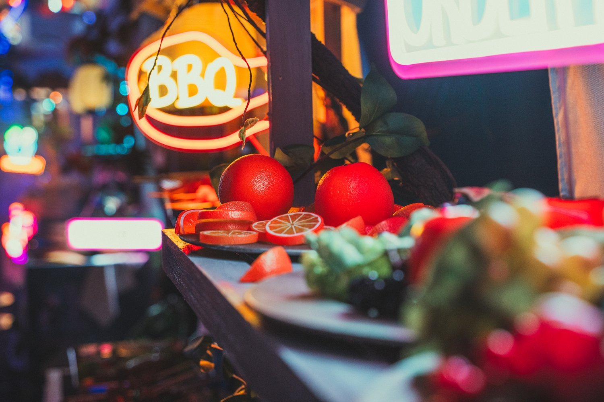
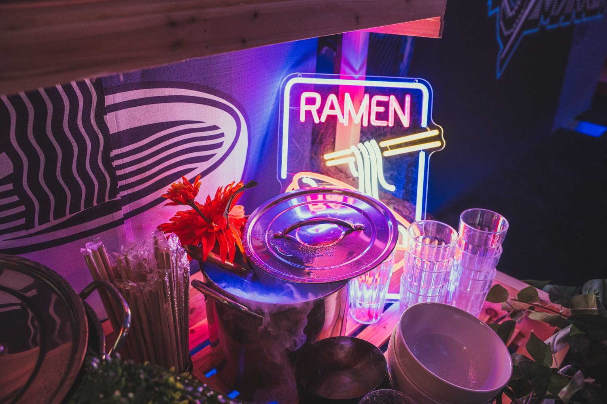
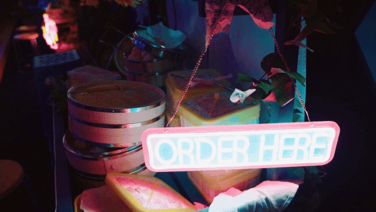

NRG x Intel
Client: NRG x Intel
Year: 2024
Role: Art Direction | Spatial Design | Experiential Environment | Lighting & Environmental Design
Night Market was a one-of-a-kind public event designed to celebrate the future of PC gaming—and push the boundaries of what’s possible inside the NRG Spectrum Castle. In partnership with Intel and NRG, Frenzy brought the immersive vision to life, crafting an entrance experience that seamlessly blended technology and art into a cohesive, high-impact environment.
At the core of our work was spatial design—curating a layout and aesthetic that encouraged exploration, discovery, and content creation.
The result: a vibrant, content-rich experience that connected brands with gamers, tech with culture, and innovation with play. The event attracted over 1,000 attendees from the LA area, with peak viewership reaching 40,000 concurrent viewers.
Night market was a playground of innovation - where the next generation of gaming tech met the next generation of gamers.
Environmental Lighting
Lighting played a central role in how guests moved through and experienced the space. From the vibrant mix of neon lights and hanging lanterns, every detail was designed to evoke a cyberpunk world that felt alive after dark. Light wasn't just a functional element—it became part of the narrative, guiding the flow of the night and setting the tone with every pulse.
Custom-Built Vendor Stalls
The vibrant night market featured classic stalls like a fish market, a futuristic weapons stand, and food vendors offering dumplings, ramen, skewers, and boba. We brought these elements to life with animated details, such as steam billowing from the ramen pot and fog cascading over food crates. These sensory elements created a dynamic, immersive atmosphere that echoed the chaotic joy of a night market.
We didn’t just bring the game into the real world, we brought the culture around gaming to life.








Produced by NRG In House Team
Step & Repeat Fabrication, Stage Design by Taylor Inc